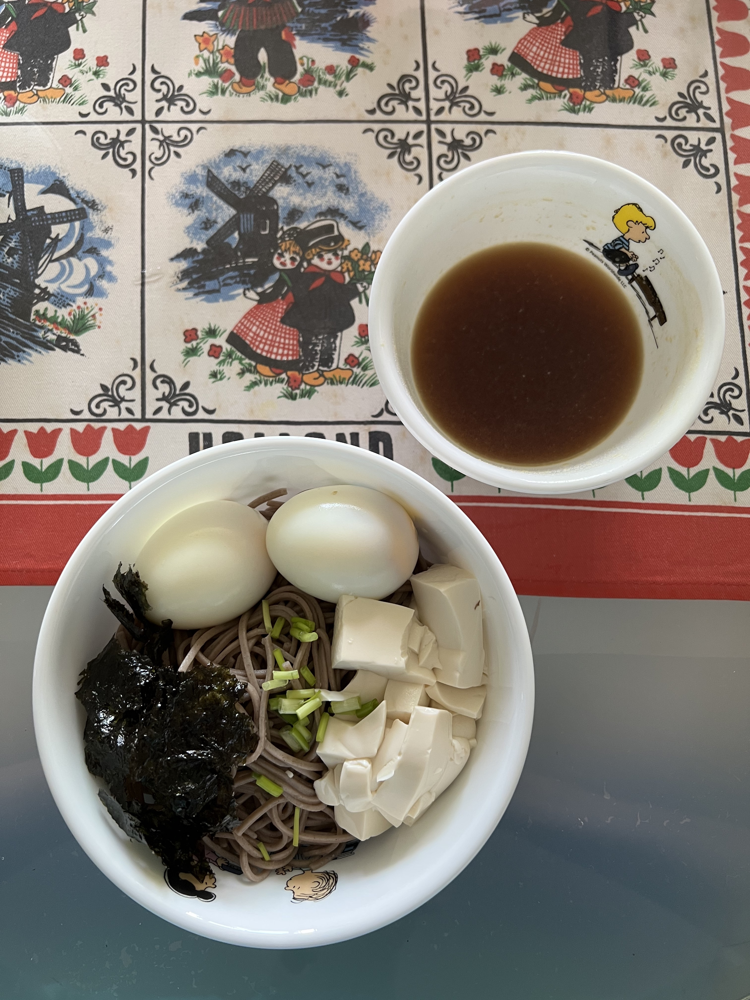

Cold Soba Noodles with Dipping Sauce

What is this?
Cold soba noodles served with dipping sauce is as simple and healthy a meal as it gets!
Ingredients (1 serving):
- 1 bundle soba noodles
- 1 teaspoon salt
- 100g Japanese silken tofu
- 2 eggs
- 1/2 tablespoon honey (mixed with 1/2 tablespoon water)
- 1/2 cup chicken stock
- 1/8 cup soy sauce
- 1 scallion
- 2 seaweed
Steps:
- Bring a large pot of water to a boil at medium high heat.
- Add the noodles to the boiling water and spread them around the large pot.
- Cook the noodles for 2 1/2 minutes.
- Transfer the noodles to a colander and run it under cold water to cool the noodles down.
- Bring another pot of water to a boil at medium high heat and add salt.
- Cut the tofu into small cubes (while in packaging).
- Add the tofu to the boiling water.
- Remove the pot from the heat and let the tofu cook for 10 minutes.
- Transfer the tofu to the colander and run it under cold water to cool the tofu down before placing on top of the noodles.
- Cook the hard boil eggs and place on top of the noodles.
- Mix the honey and water to make the honey water.
- Mix the honey water, chicken stock and soy sauce to make the dipping sauce.
- Cut the scallion and seaweed into small pieces to garnish the soba noodles before serving.